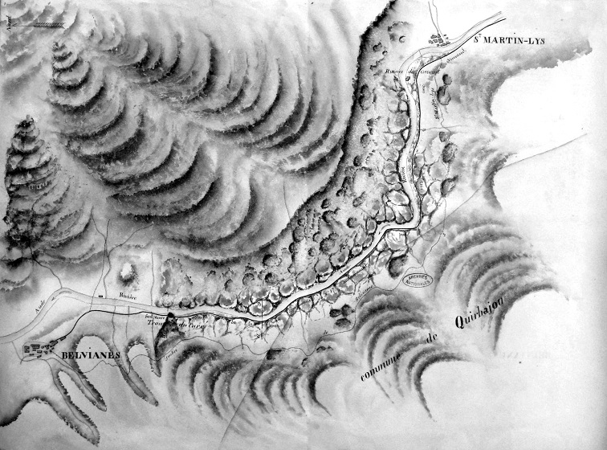
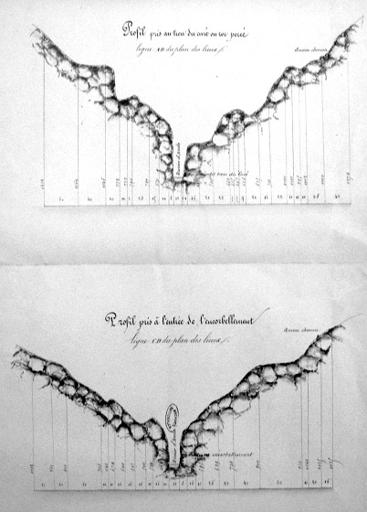

Je consacre cette page à l'iconographie des gorges de la Pierre-Lys, parce que le nombre et la qualité des pièces que j'ai à ma disposition est très conséquent, mérite d'être publié, mais est difficilement intégrable aux pages pré-existantes (Gorges de la Pierre-Lys et Traces du chemin initial de Félix Armand) sous peine d'en rendre compliquée la lecture.

dessin5 de Antoine-Ignace Melling (1825)
Premier dessin connus du trou du curé (voir la gravure correspondante à la page sur la Pierre-lys)

Gravure de Melling colorisée - carte postale

La page de garde des 7 photos Cochet
Permet de dater les photos suivantes comme antérieures à 1884
De fait, par le Fronton du grand tunnel et l'absence du petit sur certaines de photos je les estimes postérieures à 1855 et antérieures à 1877 (percement de ce 2ième) tunnel - à ce jour je n'ai pu voir que 2 (ou 3?) des 7 photos

Tunnel percé en 1855, à l'époque il mesurait 80 mètres (fortement réduit depuis)
et sur le coté du tunnel
Chemin qui contournait la montagne avant le percement du tunnel, creusé par les Martinlysois sur les directives de leur abbé Félix Armand

Tunnel percé en 1855 (gros plan de la photo précédente ?)

Attelage traversant les gorges de la Pierre-Lys
Le fond Trutat a été donnée par le musée du Vieux Toulouse aux archives municipales de Toulouse (la première photo) et à la bibliothèque de Toulouse (les 4 autres) - ce sont ces photos qui sont reproduites ici (Cliquer sur la photo pour accéder au site d'origine).
Ces clichés ont été pris entre 1859 et 1910 - Le premier semble le plus ancien, car la photo a été prise avant le forage du pré-tunnel ferroviaire de Fontmaure (pré-tunnel dont je ne connais pas la date de percement...), contrairement aux 3 autres clichés présentant le trou du curé (le trou noir à gauche). Toutes les photos sont antérieures à la voie ferrée donc sont antérieures à 1896
Les 2 photos suivantes sont des négatifs (ou positifs en regardant de l'autre coté...) de photos sur plaque de verre
Cote 51Fi473 - Le défilé de Pierre Lisse. Aude - Vue des gorges et du passage dit "Le trou du curé".
,_Aude_chemin%20Armand.jpg)
Chemin de Félix Armand contournant le premier rocher à l'entrée des Gorges coté St Martin - Même thème que la première photo Cochet, sans montrer le nouveau tunnel...
Les 3 photos suivantes sont des vues du trou du curé prises plus ou moins près avec le même processus : objectif hémisphérique, papier Morgan (négatif sur papier - La photo est inversée par rapport à la vue réelle) - Notes manuscrites de Trutat : "Gorges de Pierre Lisse, Le trou du curé, tunnel du curé"


2 Photographies d'Arthur Batut vers 1875 - Coll Espace photographique Arthur Batut/Archives départementales du Tarn

 (Photos publiées sur le facebook de Dominique Arthur Batut ajoutées à mon site avec son accord, information transmise par Bernard Louvet)
(Photos publiées sur le facebook de Dominique Arthur Batut ajoutées à mon site avec son accord, information transmise par Bernard Louvet)

Les cartes postales reproduites ci-dessous sont issues des collections Teulière, Jean Lautier et Gérard Gosselin
Sous cette terminologie, j'appelle les vues prises coté St Martin montrant le cours de l'Aude contrarié et l'entrée des tunnels routier et ferroviaire


Ces 2 cartes avec une photo identique ont la particularité de montrer la voie ferrée avant la pose des rails et la pose du pont de fer du tunnel ferroviaire ce qui permet de dater la photo comme antérieure à 1900.
A la gauche du tunnel routier, il est possible de voir le début de l'ancien chemin qui passait au dessus de cette montagne, celui antérieur à la route de la Pierre-lys percée par Félix Armand et pouvant mener à Quirbajou (en 1900, il menait à un petit plateau cultivé, aujourd'hui abandonné suite éboulement, et aux ruines de "la chapelle St Jacques" que l'abbé Mazières considérait comme une halte sur la Jacotte passant par St Martin).


Sur ces 3 cartes les rails sont posés, par contre sur la première il n'y a pas encore les pilonnes électriques, la deuxième porte une date (1913), la dernière enfin est une vue plus large montrant la route suivant l'ancien cours de l'Aude et donc l'espace qui servira plus tard à la pêcherie


Là encore la présence ou non du pont de fer et l'absence ou la présence du pilonne permettent d'estimer l'ordre chronologique des photos


Je n'ai pas fait de distinction entre les différents points photographiés ni l'ordre chronologique, c'est tout en vrac...


Bulletin de la Société d'études scientifiques de l'Aude de 1902

Le trou du curé
Annuaire du club alpin français de 1903

Annuaire du club alpin français (1903) p256 (Bibliothèque Nationale de France - Gallica)
Le monde illustré du 5 mars 1904

Le trou du curé
le monde illustré 1904 page 193 Gallica Bibliothèque nationale de France, département Philosophie, histoire, sciences de l'homme, FOL-LC2-2943

Les routes de France (1921)/ par Jean Bonnerot p157 (Bibliothèque Nationale de France - Gallica)

Le petit tunnel de St Martin
L'éclair du 16 Août 1939 Page 4 (Ressources Patrimoines de la région occitanie)
Livraisons de l'histoire de l'architecture 2013
Plan des gorges de la Pierre-Lys - vue de dessus - archives nationale F/1c(I)/139 - 1857 (en vue de l'implantation du monument à l'abbé Félix Armand)
Plan des gorges de la Pierre-Lys - vue en coupe - archives nationale F/1c(I)/139 - 1857
Orner ou ne pas orner, la série des hommages publics aux Archives nationales par Catherine Chevillot - Livraisons de l'histoire de l'architecture - 21 | 2013 paragraphe 15 - page 9

Pierre-Lys 1913
cette photo fait partie d'un album photo conservé aux archives départementales de l'Aude
l'album est référencé en 3 J 465(photos 1913)